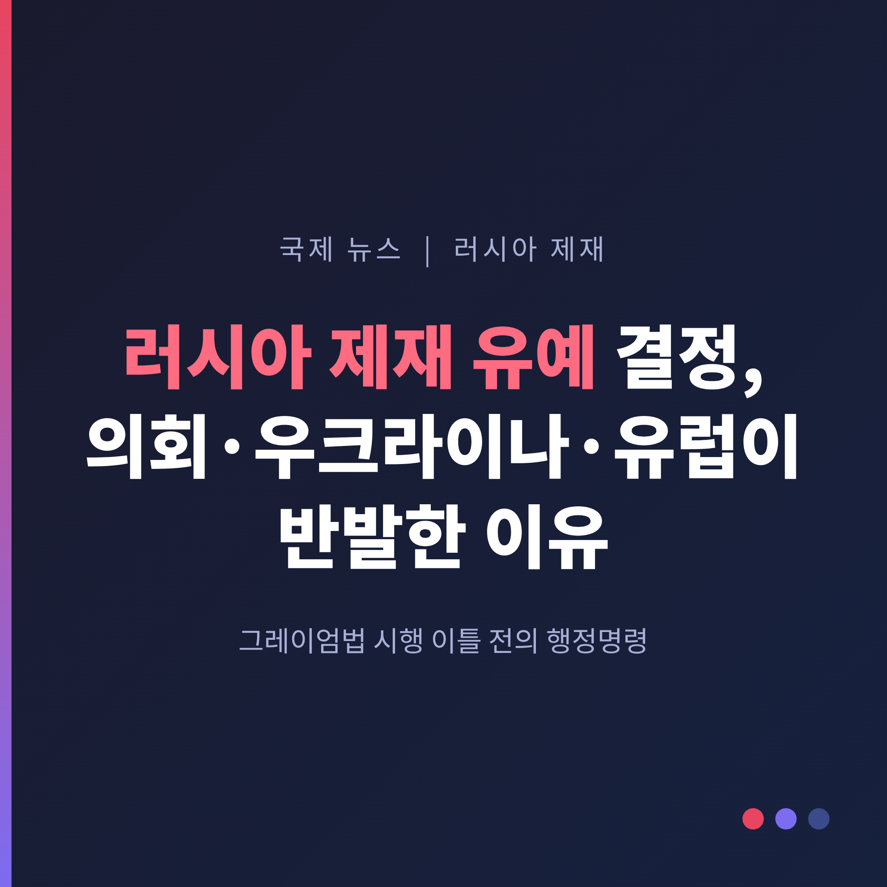
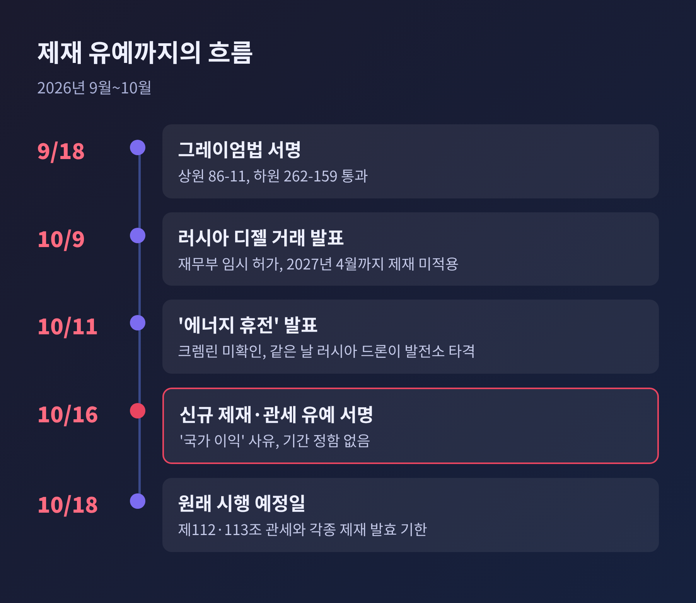
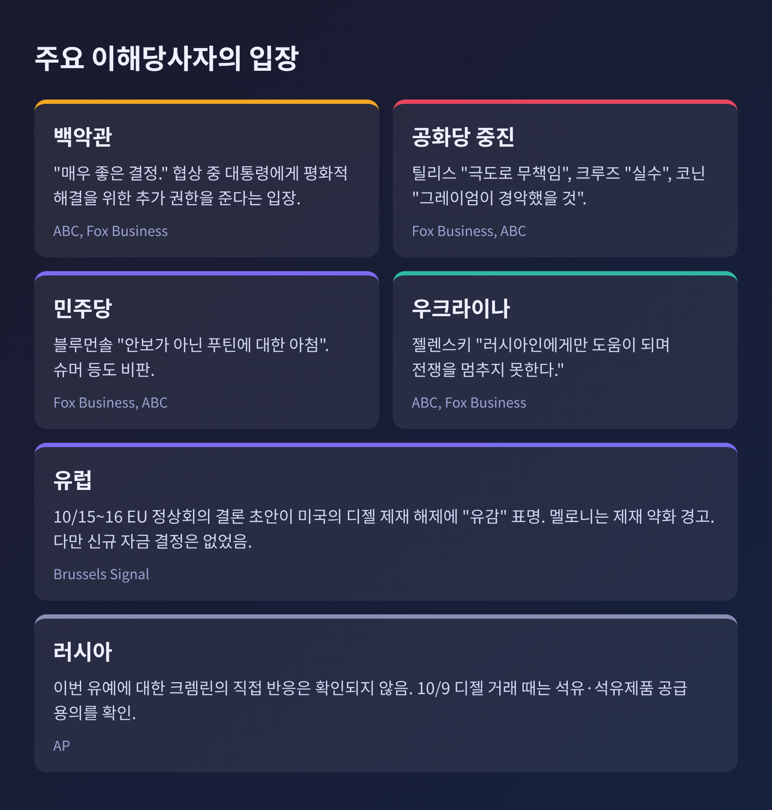
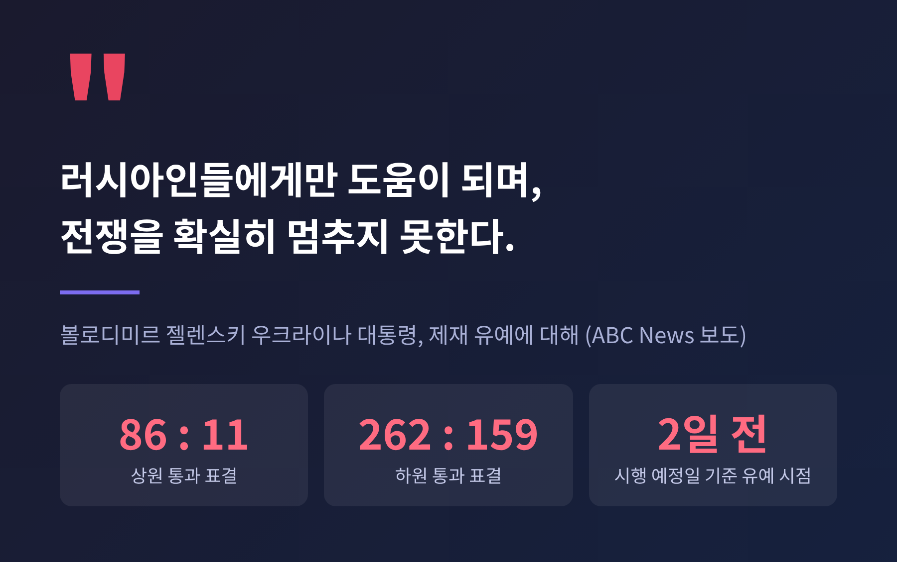
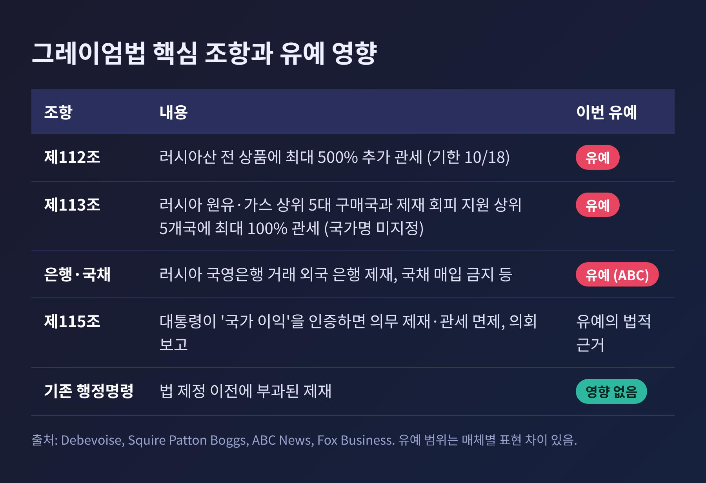
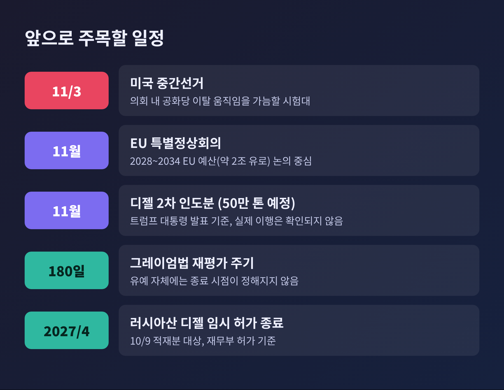

트럼프 대통령이 발효를 이틀 앞둔 러시아 신규 제재와 관세를 유예했습니다.
10월 16일(현지시간 금요일) 서명한 행정명령으로, 미국 의회 안팎과 우크라이나, 유럽이 동시에 반발하고 있습니다.
이번 글에서는 러시아 제재 유예가 무엇을 멈췄는지, 왜 논란이 큰지, 앞으로 무엇을 봐야 하는지 정리해 보겠습니다.
3줄 요약
유예의 대상은 올해 9월 18일 서명된 '린지 O. 그레이엄 러시아·이란 제재법'입니다.
법안을 주도한 린지 그레이엄 상원의원은 올해 7월 별세했고, 법에는 그의 이름이 붙었습니다.
상원은 86대 11, 하원은 262대 159로 이 법을 통과시켰습니다.
이 법은 10월 18일을 기점으로 여러 조치를 의무화했습니다.
러시아산 상품에 최대 500%의 추가 관세를 매기고, 러시아산 원유·가스를 계속 사들이는 상위 5개 구매국에도 최대 100% 관세를 부과할 수 있게 했습니다.
제재 회피를 가장 많이 돕는 5개국도 대상입니다.
법에는 국가 이름이 명시되어 있지 않습니다.

ABC 뉴스에 따르면 이번 행정명령은 이 가운데 핵심 조항 대부분을 유예했습니다.
관세뿐 아니라 러시아 국영은행과 거래하는 외국 은행에 대한 제재, 러시아 국채 매입 금지 등도 포함된다고 합니다.
반면 기존 행정명령에 근거한 제재는 그대로 유지됩니다.
명령문은 "미국의 국가 이익"에 부합한다고만 밝혔고, 구체적인 설명은 붙이지 않았습니다.
트럼프 대통령은 이를 "매우 좋은 결정"이라고 불렀습니다.
백악관 대변인은 협상이 이어지는 중에 이 법이 대통령에게 평화적 해결을 위한 추가 권한을 준다고 설명했습니다.
핵심은 시점과 맥락입니다.
이번 유예는 열흘도 지나지 않아 나온 두 번째 완화 조치입니다.
앞서 10월 9일 트럼프 대통령은 푸틴 대통령과 통화한 뒤 러시아산 디젤을 미국과 세계 시장에 풀기로 했다고 발표했습니다.
재무부는 같은 날 적재된 러시아산 디젤에 2027년 4월까지 제재를 적용하지 않는 임시 허가를 냈습니다.
2022년 2월 전쟁 이후 표준 30일을 넘긴 첫 디젤 제재 완화였습니다.
배경에는 연료 가격이 있습니다.
미국 디젤 평균가는 9월 22일 갤런당 6.52달러로 사상 최고를 기록했습니다.
2월에 시작된 이란 전쟁과 호르무즈 해협 차질이 겹친 결과로 보도됩니다.
11월 3일 중간선거가 다가오는 만큼 정치적 계산이 있다는 분석도 나옵니다.
다만 이는 해석이며, 백악관이 공식적으로 밝힌 이유는 아닙니다.
실효성에 대한 의문도 큽니다.
트럼프 대통령이 밝힌 첫 물량 30만 톤은 약 225만 배럴로, 하루 약 380만 배럴에 이르는 미국 디젤 수요에 비하면 작은 규모라는 평가가 있습니다.
에너지 전문가들도 가격 효과가 제한적일 것이라고 봅니다.
작은 수혜를 위해 큰 제재 수단을 접었다는 것이 비판의 골자입니다.
비판은 여야를 가리지 않았습니다.
공화당의 톰 틸리스 상원의원은 이번 결정을 "극도로 무책임하다"고 했습니다.
상원이 86대 11로 통과시킨 법을 무시했다는 지적입니다.
테드 크루즈 상원의원도 폭스뉴스에서 실수라고 평가했습니다.
존 코닌 상원의원은 그레이엄 의원이 살아 있었다면 경악했을 것이라고 말했습니다.
앞서 10월 13일에는 미치 매코널, 수전 콜린스 등 공화당 의원들이 디젤 거래 철회와 제재 시행을 촉구했다고 ABC가 전했습니다.
민주당의 리처드 블루먼솔 상원의원은 법안 공동 발의자로서 이번 유예를 안보가 아닌 푸틴에 대한 아첨이라고 비판했습니다.
민주당의 척 슈머 상원의원도 푸틴에게 선물을 줬다는 취지로 강하게 반발했습니다.
반대 목소리도 있습니다.
법안에 반대표를 던졌던 토머스 매시 하원의원은 "거의 모든 조항"이 유예된 것을 환영했습니다.
니키 헤일리 전 유엔대사는 푸틴에 대한 "끔찍한 오판"이라고 평했습니다.

젤렌스키 대통령은 제재 완화가 "러시아인들에게만 도움이 된다"고 했습니다.
전쟁을 멈추게 하지도 못한다는 것입니다.
그는 법안을 지지한 양당 의원들에게 감사를 표했습니다.
10월 9일 디젤 거래 직후에는 "강한 파트너들의 약한 결정"이라고 말했습니다.

우크라이나는 대응 수위도 높였습니다.
SCMP는 젤렌스키 대통령이 미국의 요구와 달리 러시아 정유시설 공격 재개를 지시했고, 미국이 제공하던 위성 시스템 장애로 방공에 어려움이 생겼다고 보도했습니다.
10월 11일 트럼프 대통령이 발표한 '에너지 휴전'은 크렘린이 확인하지 않은 채 같은 날 러시아 드론이 키이우와 하르키우의 발전소를 타격하면서 흔들렸습니다.
러시아의 입장은 어떨까요.
이번 유예에 대한 크렘린의 직접 반응은 확인되지 않았습니다.
디젤 거래 때는 러시아가 미국과 세계 시장에 석유와 석유제품을 공급할 용의를 확인했고, 키릴 드미트리예프 특사는 에너지 협력이 세계에 이익이 된다고 밝혔습니다.
대통령에게 이런 권한이 있는가.
법률 분석을 보면 짧게 답할 수 있습니다.
있습니다.
다만 범위와 통제가 문제입니다.
그레이엄법 제115조는 대통령이 미국의 국가 이익에 부합한다고 인증하면 의무 제재와 관세를 면제할 수 있도록 합니다.
면제는 의회 보고 대상입니다.
데보이스 법률사무소의 분석에서는 이 면제를 의회가 불승인할 별도 결의 절차가 확인되지 않았습니다.
의회가 직접 되돌릴 장치가 마땅치 않다는 뜻이지만, 최종 해석은 확인이 더 필요합니다.
그래서 논쟁은 법 위반이 아니라 법의 취지로 옮겨 갑니다.
의회가 압박 수단을 의무로 못 박아 두었는데, 행정부가 시행 직전에 한꺼번에 접었다는 비판입니다.
백악관은 정반대로 읽습니다.
유예 가능성이 있어야 협상에서 지렛대가 생긴다는 입장입니다.
이번 유예에는 종료 시점이 없습니다.
대통령 또는 국무장관이 추가 조치가 필요하다고 판단할 때까지 이어집니다.
이 점이 불확실성을 키운다는 지적이 있습니다.

유럽은 10월 15~16일 브뤼셀 정상회의에서 입장을 모았습니다.
브뤼셀 시그널에 따르면 결론 초안은 미국의 디젤 제재 해제 결정에 "유감"을 표했습니다.
조르자 멜로니 이탈리아 총리는 디젤 합의가 모스크바에 정당성과 수입을 주고 제재를 약화시킨다고 경고했습니다.
젤렌스키 대통령은 16일 오전 정상회의에 합류했습니다.
다만 유럽도 돈을 내놓지는 않았습니다.
동결 러시아 자산 활용이나 신규 자금 결정은 이번 의제가 아니었습니다.
우크라이나 대통령실 부실장은 유럽의 지원이 여전히 부족하다고 말했고, 미국산 방공 체계와 스타링크의 유럽산 대안을 개발 중이라고 했습니다.

앞으로의 변수는 네 가지로 압축됩니다.
세미포 분석처럼 푸틴 대통령에 대한 유화가 협상 복귀가 아닌 이탈로 이어졌던 전례를 경계하는 시각도 있습니다.
반대로 협상 여지를 열어 두어야 평화 합의에 다가설 수 있다는 백악관의 논리도 아직 시험대에 오르지 않았습니다.
어느 쪽이 맞을지는 몇 주 안에 일부 드러날 가능성이 있습니다.
한국은 에너지 대부분을 수입하는 나라입니다.
그래서 이번 사안을 먼 나라의 정치 공방으로만 보기는 어렵습니다.
먼저 에너지 가격입니다.
이번 유예의 배경에는 이란 전쟁과 호르무즈 해협 차질이 있습니다.
같은 변수는 국내 유가와 물가에도 영향을 줄 수 있습니다.
다만 러시아산 디젤의 소규모 공급이 한국 가격에 미칠 영향은 이번 조사에서 확인된 바 없습니다.
다음은 제재 이행의 불확실성입니다.
그레이엄법의 제3국 관세는 국가 이름 없이 구매 실적 순위로 정해집니다.
한국이 해당한다는 보도는 확인되지 않았습니다.
그래도 미국의 제재 기조가 주마다 바뀔 때, 무역과 에너지 조달 계획을 세우는 기업과 정부는 대비 시나리오를 늘려야 합니다.
끝으로 동맹의 예측 가능성입니다.
같은 미국 정책이 법으로 정해졌다가 행정명령으로 멈추는 장면은, 안보와 통상에서 미국과 약속을 다루는 한국에도 시사하는 바가 있습니다.
정리하면 이렇습니다.
이번 유예는 제재를 없앤 것이 아니라, 제재를 쓸지 말지를 다시 한 사람의 판단에 묶어 둔 결정입니다.
"법은 정했고, 시행은 유예됐다."
이 간극을 의회와 동맹이 얼마나 메울 수 있는지가, 앞으로 몇 주의 관전 포인트일 것입니다.
협상이 열매를 맺는다면 유예는 지렛대로 기억될 것이고, 그렇지 않다면 압박의 신뢰를 스스로 낮춘 선택으로 남을 것입니다.
※ 이 글은 2026년 10월 18일까지 보도된 내용을 정리한 것이며, 일부 수치와 해석은 매체마다 차이가 있어 출처를 병기했습니다. 주요 출처: ABC News, Fox Business, CNN, NBC News, CNBC, AP, SCMP, Brussels Signal, Al Jazeera, Korea Times, Semafor, Debevoise, Squire Patton Boggs.